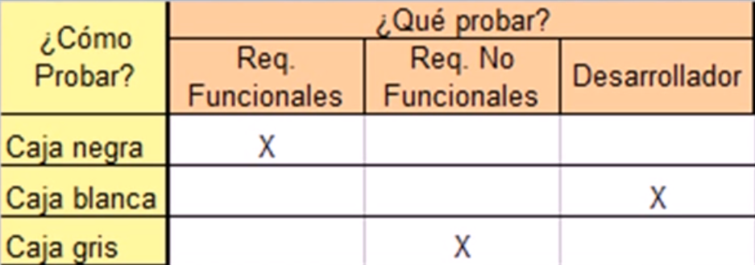

Las pruebas de software es un elemento crítico para la garantía del correcto funcionamiento y usabilidad del software a utilizar, sea de industria (empresa) o de versionamiento libre (cualquier persona la puede utilizar).
Detectar defectos en el software. Verificar la integración adecuada de los componentes. Verificar que todos los requisitos se han implementado correctamente.
Identificar y asegurar que los defectos encontrados se han corregido antes de entregar el software al cliente y garantizar que en producción el software desarrollado funcione sin ningún problema.
Diseñar casos de prueba que sistemáticamente saquen a la luz diferentes clases de errores, haciéndolo con la menor cantidad de tiempo y esfuerzo.
La forma más común de organizar las actividades relacionadas al proceso de pruebas de software son: Planeación, fija las metas y una estrategia general de pruebas Preparación, se describe el procedimiento general de pruebas y se generan los casos de prueba específicos.
Ejecución, incluye la observación y medición del comportamiento del producto.Generar casos de prueba efectivos que revelen la presencia de fallas es fundamental para el éxito del proceso de pruebas (etapa de preparación). Idealmente, se debería determinar un conjunto de casos de prueba tales que su ejecución exitosa implique que no hay errores en el software desarrollado. Comúnmente este objetivo ideal no se puede lograr debido a las limitaciones prácticas y teóricas. Cada caso de prueba cuesta dinero: esfuerzo para generarlo, tiempo de cómputo para ejecutarlo, esfuerzo para evaluar los resultados, Por lo tanto, el número de casos de prueba necesarios para detectar los errores debe ser minimizado para reducir costos.
Los dos objetivos principales del proceso de pruebas:
Como con frecuencia son contradictorios, el problema de seleccionar el conjunto de casos de prueba con el que un programa debe ser probado se vuelve una tarea muy compleja.
Generalmente se comienza probando las partes más pequeñas y se continúa con las más grandes. Para el software convencional: - El módulo (componente) se prueba primero - Se continua con la integración de módulos Para el software orientado a objetos Se prueba primero una clase (atributos, métodos, colaboración).
Un conjunto de actividades de pruebas suele orientase a comprobar determinados aspectos de un sistema software (o de una parte del mismo). Continuando así con nuestro anterior artículo sobre el modelo de cebolla para los Niveles de Pruebas Software, y siguiendo las directrices del ISTQB, acotaremos los Tipos de Pruebas Software en función del objetivo en que se centran.
Objetivo de la Prueba: Se focaliza en ejecutar cada módulo (o unidad mínima a ser probada, ej = una clase) lo que provee un mejor modo de manejar la integración de las unidades en componentes mayores. Busca asegurar que el código funciona de acuerdo con las especificaciones y que el módulo lógico es válido.
Descripción de la Prueba:
Técnica:
Criterio de Completitud:
Consideraciones Especiales:
Objetivo de la Prueba: Identificar errores introducidos por la combinación de programas probados unitariamente. Determina cómo la base de datos de prueba será cargada. Verificar que las interfaces entre las entidades externas (usuarios) y las aplicaciones funcionan correctamente. Verificar que las especificaciones de diseño sean alcanzadas.
se denominan pruebas de regresión a cualquier tipo de pruebas de software que intentan descubrir errores (bugs), carencias de funcionalidad, o divergencias funcionales con respecto al comportamiento esperado del software, causados por la realización de un cambio en el programa. Se evalúa el correcto funcionamiento del software desarrollado frente a evoluciones o cambios funcionales. El propósito de éstas es asegurar que los casos de prueba que ya habían sido probados y fueron exitosos permanezcan así. Se recomienda que este tipo de pruebas sean automatizadas para reducir el tiempo y esfuerzo en su ejecución.
En ingeniería de software y pruebas de software, las pruebas de humo (smoke testing) son aquellas pruebas que pretenden evaluar la calidad de un producto de software previo a una recepción formal, ya sea al equipo de pruebas o al usuario final, es decir, es una revisión rápida del producto de software para comprobar que funciona y no tiene defectos que interrumpan la operación básica del mismo. Se hace la analogía al humo, puesto que en bienes raíces se inyecta humo en las tuberías de agua para validar que no tengan fugas, evitando provocar inundaciones.
Las pruebas de software (en inglés software testing) son las investigaciones empíricas y técnicas cuyo objetivo es proporcionar información objetiva e independiente sobre la calidad del producto a la parte interesada o stakeholder. Es una actividad más en el proceso de control de calidad.
Las pruebas son básicamente un conjunto de actividades dentro del desarrollo de software. Dependiendo del tipo de pruebas, estas actividades podrán ser implementadas en cualquier momento de dicho proceso de desarrollo. Existen distintos modelos de desarrollo de software, así como modelos de pruebas. A cada uno corresponde un nivel distinto de involucramiento en las actividades de desarrollo.
En un proyecto de desarrollo de software existe un conjunto de documentos asociados a cada una de las fases del ciclo de vida: planificación, análisis, diseño, construcción, Podemos considerar el proceso de testing como un proyecto que se ejecuta en paralelo con el desarrollo y en el que se pueden distinguir tres grandes etapas:
Finalización de las pruebas. En cada una de estas fases hay que generar la documentación apropiada, lo cual puede ser complicado si no se tiene una referencia adecuada. Para proporcionar una base estándar para la documentación del proceso de testing se creó la norma IEEE 829.IEEE 829 propone una serie de documentos que encajan en las etapas de testing de la siguiente forma: